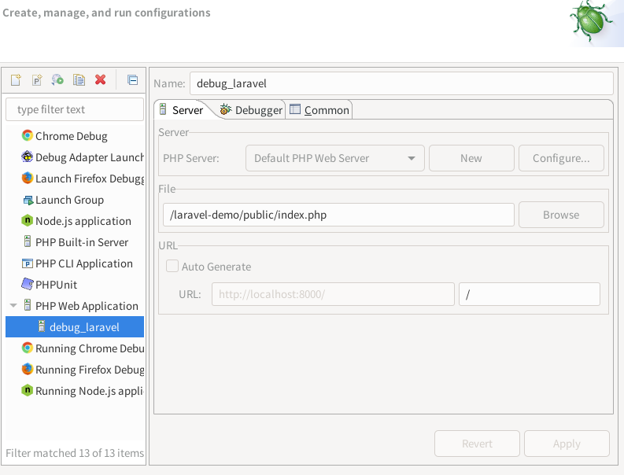

官网
github
xfce下的快捷方式
xfce desktop-item-edit
xfce: ~/.local/share/applications/*.desktop, /usr/share/applications/*.desktop
composer
- composer global show
- ~/.config/composer/vendor/bin
laravel
- .env: DB_CONNECTION=sqlite, DB_DATABASE=/absolute-path-laravel-app/database/laravel.sqlite
eclipse pdt
- File -> Import -> General -> Projects from Folder or Archive
- 打开"composer.json"时提示"Missing node.js":
- update-alternatives --install /usr/bin/node node `which node` `node version in pure number`
- update-alternatives --display node
- update-alternatives --config node
- 显示隐藏文件: Project Explorer -> 漏斗 -> 取消勾选".* resources"
- tab改用空格: Window -> Preferences -> General -> Editors -> Text Editors -> Insert spaces for tabs
- 显示空白字符: -> Show whitespace characters
xdebug
eclipse pdt debug laravel
- 1. xdebug配置: xdebug.remote_enable = true
- 2. laravel项目里命令行启动服务: php artisan serve
- 3. eclipse pdt
- Click the "Debug drop down arrow" and select "Debug Configurations"
- Select "PHP Web Application" and click "New launch configuration"
- On the "Server tab" click "Configure" to edit the default server or "New" to create a new server
Server Properties
- Base URL -> http://localhost:8000
- Document Root -> laravel public folder
- "Debugger tab", select "Xdebug"
- debug File, URL

- 4. laravel/public/index.php->右键->debug as->php web app
- 5. 非eclipse的api里调试需要带上"?XDEBUG_SESSION_START=ECLIPSE_DBGP"
TODO:
- 不让eclipse检查该指定文件夹的错误
- General->Appearance->Colors and fonts->Basic->Content Assistent
- Debugging/Profiling, how to find Bottlenecks? profiler_output_dir webgrind
- pdt debugging doc